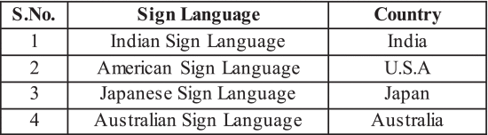

When dealing with any group classed as disabled one of the biggest issues involved is the possibility of discrimination.
The most obvious and visible form of discrimination is in the treatment of disabled individuals by other individuals in society, but less visible, but no less insidious is discrimination that happens systemically. In this case there is a risk of this happening across the board as decisions are made about how technology is designed, implemented and funded.
The most accurate and effective technology available for SLT are physical devices such as Cyber glove, Microsoft Kinect and Armband, but these systems are expensive and out of reach of the everyday users.(93) Here wealth is a discriminatory factor in accessing technology. The real risk of systemic discrimination lies in the question “How much are we willing to spend on researching and developing viable systems and how inclusive will we be in our target audience?” These questions are asked by both governments and industry, and they are inevitably overly influenced by funding and profitability as opposed to need or equity.
While there are over 350 million sign language users worldwide, there are only somewhere around 23,000 users of NZSL.(92) There is a real risk that NZSL users will be neglected as systems are created. This is exemplified by the accompanying table(91) of sign languages from an article relating to SLT. Notably, NZSL is missing. Similarly, a Japanese company has done some admirable work in relation to sign language translation and interpretation, but again they only cover ASL, BSL and ISL.(95) The lack of inclusion of NZSL is undoubtedly linked to the target audience and funding constraints.
Industry is often very effective at driving innovation due in part to the fact that it is profit driven, and thereby it is able to attract higher funding levels. A Chinese company is developing a system called Heart-Speaker, which so far has reached an accuracy rate of over 90%.(96) While this system will greatly aid in barrier free communication between a doctor and patient, by it’s nature it is targeted at the medical industry and won’t realistically be available to an individual user outside of that environment.
The boon of developing robust, inclusive, cost-effective SLT technology is that the deaf and mute communities would be able to be understood by the rest of society in both critical communication and in normal everyday human interactions. There is significant risk in relation to the level of accuracy that future systems will be able to achieve. Insufficient levels of accuracy in the capabilities of the technology could result in misinterpretation which could lead to misunderstanding. Challenges already exist since sign language cannot be translated word-for-word into spoken language, and it also uses body movement and facial expression in producing meaning.(97) As(hopefully) SLT systems become more ubiquitous, people will become more comfortable and reliant on this technology. Misunderstanding due to misinterpretation runs the risk of something small like being unintentionally insulting to something of importance like communicating critical information incorrectly. Consequently, being thorough and diligent in assuring accuracy in SLT systems is essential.
Made 22 May 2023